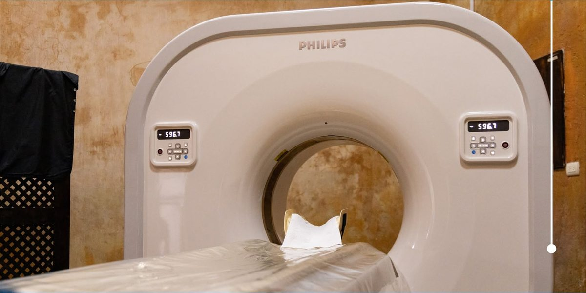
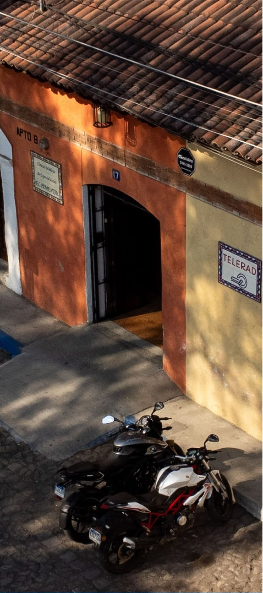

Imagen diagnóstica · Antigua Guatemala
Estudios de imagen con tecnología Philips
Tomografías, rayos X, ultrasonido y más, con citas en línea y emergencias las 24 horas en Calle Ancha de los Herreros #17.
¿Qué estudio necesitas?
Tomografía computarizada (TAC)Imagen diagnóstica · 30 minQ900Radiografías (Rayos X)Imagen diagnóstica · 15 minQ120UltrasonidoImagen diagnóstica · 30 minQ250MamografíaImagen diagnóstica · 30 minQ450Densitometría óseaImagen diagnóstica · 30 minQ420Consulta con radiólogoConsulta · 30 minQ150Tomografía de emergencia 24/75886-1031Tu visita
Así funciona
De la orden médica al estudio, en cuatro pasos.
Elige tu estudio
Busca el que indicó tu médico.
Reserva tu horario
Solo se muestran horas libres.
Recibe tu código
Con la preparación del estudio.
Visítanos
Calle Ancha de los Herreros #17.
Servicios
Estudios y precios
Elige el estudio y reserva tu horario.
| Estudio | Descripción | Duración | Desde | |
|---|---|---|---|---|
| Tomografía computarizada (TAC)Sala de tomografía | Estudios de tomografía con equipo Philips. Servicio de tomografías de emergencia las 24 horas, los 7 días. | 30 min | Q900 | Agendar |
| Radiografías (Rayos X)Sala de imagen | Estudios de tórax, extremidades, columna y más. Resultados digitales y atención rápida. | 15 min | Q120 | Agendar |
| UltrasonidoSala de ultrasonido | Abdominal, pélvico, obstétrico, tiroides, mamas y partes blandas. | 30 min | Q250 | Agendar |
| MamografíaSala de mamografía | Detección temprana del cáncer de mama. Recomendada para mujeres a partir de los 40 años. | 30 min | Q450 | Agendar |
| Densitometría óseaSala de densitometría | Medición de la densidad ósea para detectar osteoporosis. | 30 min | Q420 | Agendar |
| Consulta con radiólogoConsultorio | Interpretación de estudios previos y orientación sobre qué estudio necesitas. | 30 min | Q150 | Agendar |
Horario de atención
- Lunes7:30 am – 6 pm
- Martes7:30 am – 6 pm
- Miércoles7:30 am – 6 pm
- Jueves7:30 am – 6 pm
- Viernes7:30 am – 6 pm
- Sábado7:30 am – 12 pm
- DomingoCerrado

Preguntas frecuentes
Antes de tu cita
¿Necesito orden médica?
Te recomendamos llevar la indicación de tu médico. Si tienes dudas sobre qué estudio necesitas, agenda una consulta con el radiólogo o escríbenos.
¿Cómo me preparo para el estudio?
Cada estudio tiene recomendaciones propias. Al reservar recibirás tu código y la preparación que corresponde.
¿Atienden emergencias?
Sí: tomografías de emergencia las 24 horas, todos los días, al 5886-1031.
¿Puedo cancelar o cambiar mi cita?
Sí. Con tu código o tu teléfono puedes consultarla y cancelarla desde “Mis citas”.